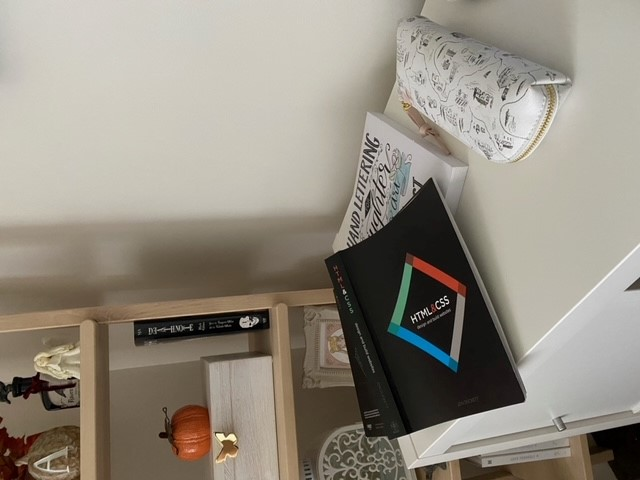

It's important to me to have a clean, soothing environment to work in. Otherwise I get distracted way too easily. I don't allow myself to have clutter in my room either, because I will constantly want to reorganize it and shift things around. That's why I keep my bedroom/ work space pretty basic and neautral looking!

I'm not very good at web design. Not good at all, and I have hand tremors so hand lettering (with all it's straight lines) are my two weakest points in school. I grabbed some textbooks/ workbooks to hopefully help me along the way! I like to spend a lot of time reading. No matter how late it gets, if I haven't had a chance to read anything I'll grab even a small magazine and read for half an hour to an hour each night just to relax before going to sleep. As important as it is for me to not have clutter in my bedroom, I do still love to design my personal space. Neutral does not equal plain! Take my neon sign for instance; it gives my room a nice little modern pop without making it look messy or tacky since it's still a clean white colour and it's dainty enough not to overload my wall space. In the middle of all my hustle and bustle, I have my sweet kitty named Kovu to keep me company. He will usually take naps on my bed while I work on school assignments or small freelance projects for friends. If he's not sleeping though he's usually tapping my shoulder to ask for head pets and following me around the house for attention and snacks. Truly, a ham. I will fully admit I am a coffee fiend. I absolutely must have my latte each morning or I will be a sluggish yawning mess all day, haha! However, in the ultimate argument "coffee or tea?" I say both! I personally enjoy a cup of vanilla chai or earl grey in the late afternoon to warm me up and soothe my soul!